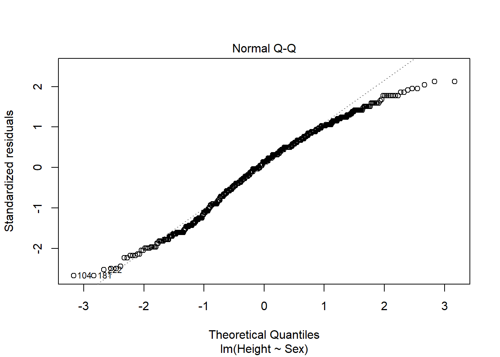
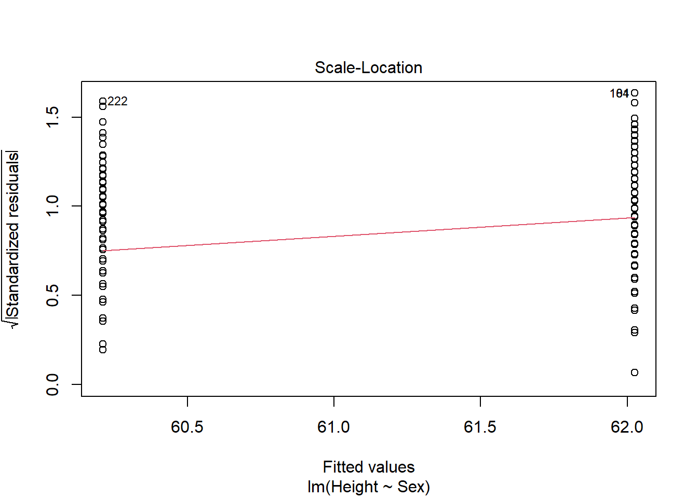

Combining (lots of) numerical and categorical predictors
ANCOVAs and beyond
So far we’ve used linear models to consider how categorical predictors and continuous numerical predictors can predict continuous outcomes. We’ve already considered having multiple categorical predictors (remember factorial ANOVAs). Now we’ll extend those ideas to models where we have numerous categorical and/or continuous numerical predictors in the same model. In doing so we’ll introduce (and connect) ANCOVAs, multiple regression, and model selection.
Back to the iris data
We will motivate this (again!) with an example from our favorite iris data. So far we have considered how species impacts sepal lengths (abbreviated analysis:
Call:
lm(formula = Sepal.Length ~ Petal.Length, data = iris)
Residuals:
Min 1Q Median 3Q Max
-1.24675 -0.29657 -0.01515 0.27676 1.00269
Coefficients:
Estimate Std. Error t value Pr(>|t|)
(Intercept) 4.30660 0.07839 54.94 <2e-16 ***
Petal.Length 0.40892 0.01889 21.65 <2e-16 ***
---
Signif. codes: 0 '***' 0.001 '**' 0.01 '*' 0.05 '.' 0.1 ' ' 1
Residual standard error: 0.4071 on 148 degrees of freedom
Multiple R-squared: 0.76, Adjusted R-squared: 0.7583
F-statistic: 468.6 on 1 and 148 DF, p-value: < 2.2e-16
However, what if we wanted to consider the combined (and potentially interacting) effects of petal length and species on sepal length? This is like our 2-way ANOVA but with one predictor being continuous. This is often called an ANCOVA, but it’s just another linear model! Overall, we are decomposing the variance of each data point among various factors. Our use of type III residuals let’s us ask how much any given factor explains given that other factors are in the model (we’ll explore this more below). Put another way, we might want to know if a factor adds explanatory power to the model (and is not redundant or subsumed by another factor).
Continuing to use focal iris dataset, we can use the same format we used for factorial or 2-way ANOVAs to add the factors.
This model includes an interaction and matche the following null hypotheses (note 2 are copied from previous sections!):
\[
\begin{split}
H_O: \mu_{sepal \ length, \ setosa} = \mu_{sepal \ length, \ virginica} = \mu_{sepal \ length, \ versicolor}\\
H_O: \beta_\textrm{(coefficient between sepal and petal length)} = 0\\\\
H_O: \textrm{relationship between petal length and sepal length does not differ
among species}\\
\end{split}
\]
Once we develop the model, we can visually check the assumptions, which remain
\[
\epsilon \approx i.i.d.\ N(\mu,\sigma)
\]
plot(iris_ancova)
If assumptions appear to be met (as they do here), we can consider impacts of factors. Given the presence of categorical predictors, an Anova table may be informative
Since the interaction is not significant (F2,144 = 1.68, p = 0.19), we have the same 2 options we noted in factorial ANOVAs.
Interpret results with the interaction
We can read results from the full model. These show no interaction between species and petal length (F2,144 = 1.68, p = 0.1895) and no impact of petal length (F1,144=3.83, p = 0.052) but a significant impact of species (F2,144 = 12.81, p < 0.01). We can follow this up with a post-hoc test
Warning in mcp2matrix(model, linfct = linfct): covariate interactions found --
default contrast might be inappropriate
summary(compare_ancova_tukey)
Simultaneous Tests for General Linear Hypotheses
Multiple Comparisons of Means: Tukey Contrasts
Fit: lm(formula = Sepal.Length ~ Species * Petal.Length, data = iris)
Linear Hypotheses:
Estimate Std. Error t value Pr(>|t|)
versicolor - setosa == 0 -1.8056 0.5984 -3.017 0.00843 **
virginica - setosa == 0 -3.1535 0.6341 -4.973 < 0.001 ***
virginica - versicolor == 0 -1.3479 0.6544 -2.060 0.10178
---
Signif. codes: 0 '***' 0.001 '**' 0.01 '*' 0.05 '.' 0.1 ' ' 1
(Adjusted p values reported -- single-step method)
which suggests I. versicolor and I. virginica are similar to each other but different from other species.
However, note the glht output notes interactions are still present in model, so this approach may be inappropriate. For ANOVA’s we noted could instead compare means for each combination.
$emmeans
Species Petal.Length emmean SE df lower.CL upper.CL
setosa 3.76 6.25 0.637 144 4.99 7.51
versicolor 3.76 5.52 0.070 144 5.38 5.66
virginica 3.76 4.80 0.163 144 4.48 5.12
Confidence level used: 0.95
$contrasts
contrast estimate SE df
setosa Petal.Length3.758 - versicolor Petal.Length3.758 0.731 0.641 144
setosa Petal.Length3.758 - virginica Petal.Length3.758 1.449 0.658 144
versicolor Petal.Length3.758 - virginica Petal.Length3.758 0.719 0.178 144
t.ratio p.value
1.140 0.4911
2.203 0.0740
4.044 0.0003
P value adjustment: tukey method for comparing a family of 3 estimates
This approach, however, is less useful for numerical predictors. By default the emmeans package uses the average for the covariate (note,
mean(iris$Petal.Length)
[1] 3.758
is why we see 3.578 spread throughout the output). While we can specify other breaks, this highlights the difference in combining cateorical variable impacts and combining effects of categorical and continuous variables.
Remove the interaction
Since the interaction isn’t significant, we can also remove it.
Anova Table (Type III tests)
Response: Petal.Length
Sum Sq Df F value Pr(>F)
(Intercept) 106.87 1 577.1 < 2.2e-16 ***
Species 437.10 2 1180.2 < 2.2e-16 ***
Residuals 27.22 147
---
Signif. codes: 0 '***' 0.001 '**' 0.01 '*' 0.05 '.' 0.1 ' ' 1
summary(petal_anova)
Call:
lm(formula = Petal.Length ~ Species, data = iris)
Residuals:
Min 1Q Median 3Q Max
-1.260 -0.258 0.038 0.240 1.348
Coefficients:
Estimate Std. Error t value Pr(>|t|)
(Intercept) 1.46200 0.06086 24.02 <2e-16 ***
Speciesversicolor 2.79800 0.08607 32.51 <2e-16 ***
Speciesvirginica 4.09000 0.08607 47.52 <2e-16 ***
---
Signif. codes: 0 '***' 0.001 '**' 0.01 '*' 0.05 '.' 0.1 ' ' 1
Residual standard error: 0.4303 on 147 degrees of freedom
Multiple R-squared: 0.9414, Adjusted R-squared: 0.9406
F-statistic: 1180 on 2 and 147 DF, p-value: < 2.2e-16
This shows that species explains a lot (0.9413717 %, in fact) of the variation in petal length. Thus interactions among species and petal length are hard to define, as each species petal lengths are mostly different than the others.
This relates to an issue we will soon see. When you consider the impacts of multiple factors on a variable, you are assuming they are not related. That is rarely true (except for when we set up factorial ANOVAs), so we have to decide how related is ok. As factors become more related, the linear model approach does not work.On one level, its hard to split variance correctly among two similar columns. Mathematically, it also makes the design matrix harder to invert.
How does this relate to types of residuals?
This also relates to the “types” of residuals. Type 1 notes the order of factors in the model. The function anova uses this type. Note the values are different (but still significant) depending on the order.
anova(iris_ancova)
Analysis of Variance Table
Response: Sepal.Length
Df Sum Sq Mean Sq F value Pr(>F)
Species 2 63.212 31.6061 279.2076 <2e-16 ***
Petal.Length 1 22.275 22.2745 196.7730 <2e-16 ***
Species:Petal.Length 2 0.381 0.1905 1.6828 0.1895
Residuals 144 16.301 0.1132
---
Signif. codes: 0 '***' 0.001 '**' 0.01 '*' 0.05 '.' 0.1 ' ' 1
Analysis of Variance Table
Response: Sepal.Length
Df Sum Sq Mean Sq F value Pr(>F)
Petal.Length 1 77.643 77.643 685.8998 < 2.2e-16 ***
Species 2 7.843 3.922 34.6441 5.206e-13 ***
Petal.Length:Species 2 0.381 0.190 1.6828 0.1895
Residuals 144 16.301 0.113
---
Signif. codes: 0 '***' 0.001 '**' 0.01 '*' 0.05 '.' 0.1 ' ' 1
This is because Type 1 residuals remove all the variation that can be explained by the first factor (even if it could be given to a related factor), then do the same for the second and so forth. So related factors will have different p-values depending on order (unbalanced designs also impact this.)
Type II residuals don’t focus on order, but they ignore interactions. In doing so they ignore any variation that could be attributed to multiple factors.
Anova(iris_ancova, type="II")
Anova Table (Type II tests)
Response: Sepal.Length
Sum Sq Df F value Pr(>F)
Species 7.8434 2 34.6441 5.206e-13 ***
Petal.Length 22.2745 1 196.7730 < 2.2e-16 ***
Species:Petal.Length 0.3810 2 1.6828 0.1895
Residuals 16.3007 144
---
Signif. codes: 0 '***' 0.001 '**' 0.01 '*' 0.05 '.' 0.1 ' ' 1
Type III residuals include interactions, but ask how much a given factor contributes to the explanatory power of a model given main effects of other factors and interactions, including those with the focal factor, are already present. This use of marginal means may seem odd (e.g., asking if a factor should be included when you are already including interactions with said factor) and also means the sum of squares that we get from decomposing the variance adds up to more than the total sum of squares. However, from a conceptual standpoint they work and are thus commonly used.
What would interactions look like?
So, what would interactions actually look like, and how would you interpret them? To illustrate this, let’s pretend we visit another valley and sample 3 new iris species (I. baruch, I. hunter, and I. york). We want to see how species and petal length impact sepal length in these species. Let’s make some data to suggest potential outcomes.
No impact of petal length or species
First, we might find no relationship between the variables. That might looi something like this:
ggplot(iris_example_species, aes(x= Petal_Length, y = Sepal_no_impacts, color = Species)) +geom_point()+ylab("Sepal Length") +xlab("Petal Length") +ggtitle("Impact of petal length and species on sepal length") +geom_smooth(method ="lm", se = F)
`geom_smooth()` using formula = 'y ~ x'
Analysis would indicate (assumption plots not shown here to allow focus on interpreting interactions)
Anova(lm( Sepal_no_impacts~ Petal_Length * Species, iris_example_species), type ="III")
Anova(lm( Sepal_no_impacts~ Petal_Length + Species, iris_example_species), type ="III")
Anova Table (Type III tests)
Response: Sepal_no_impacts
Sum Sq Df F value Pr(>F)
(Intercept) 61.439 1 201.3986 <2e-16 ***
Petal_Length 0.007 1 0.0229 0.8801
Species 0.043 2 0.0700 0.9325
Residuals 21.659 71
---
Signif. codes: 0 '***' 0.001 '**' 0.01 '*' 0.05 '.' 0.1 ' ' 1
but we still find no main effects.
Impact of petal length but not species
Alternatively, we might find a situation where there is a relationship between petal length and sepal length, but no impact of species
ggplot(iris_example_species, aes(x= Petal_Length, y = Sepal_no_impact_species, color = Species)) +geom_point()+ylab("Sepal Length") +xlab("Petal Length") +ggtitle("Impact of petal length and species on sepal length") +geom_smooth(method ="lm", se = F)
`geom_smooth()` using formula = 'y ~ x'
Analysis would indicate (assumption plots not shown here to allow focus on interpreting interactions)
Anova(lm( Sepal_no_impact_species~ Petal_Length * Species, iris_example_species), type ="III")
Call:
lm(formula = Sepal_no_impact_species ~ Petal_Length + Species,
data = iris_example_species)
Residuals:
Min 1Q Median 3Q Max
-3.1913 -0.5082 -0.0111 0.6568 2.4913
Coefficients:
Estimate Std. Error t value Pr(>|t|)
(Intercept) 0.3519 0.6646 0.529 0.598
Petal_Length 1.9663 0.2187 8.990 2.45e-13 ***
Specieshunter -0.3474 0.2979 -1.166 0.247
Speciesyork -0.3805 0.3015 -1.262 0.211
---
Signif. codes: 0 '***' 0.001 '**' 0.01 '*' 0.05 '.' 0.1 ' ' 1
Residual standard error: 1.053 on 71 degrees of freedom
Multiple R-squared: 0.5375, Adjusted R-squared: 0.518
F-statistic: 27.51 on 3 and 71 DF, p-value: 6.509e-12
Impact of species but not petal length
We could also see an impact of species on sepal length, but no relationship between petal length and sepal length.
ggplot(iris_example_species, aes(x= Petal_Length, y = Sepal_no_relationship_petal, color = Species)) +geom_point()+ylab("Sepal Length") +xlab("Petal Length") +ggtitle("Impact of petal length and species on sepal length") +geom_smooth(method ="lm", se = F)
`geom_smooth()` using formula = 'y ~ x'
Analysis would indicate (assumption plots not shown here to allow focus on interpreting interactions)
Anova(lm( Sepal_no_relationship_petal~ Petal_Length * Species, iris_example_species), type ="III")
Simultaneous Tests for General Linear Hypotheses
Multiple Comparisons of Means: Tukey Contrasts
Fit: lm(formula = Sepal_no_relationship_petal ~ Petal_Length + Species,
data = iris_example_species)
Linear Hypotheses:
Estimate Std. Error t value Pr(>|t|)
hunter - baruch == 0 2.2703 0.3157 7.190 < 1e-08 ***
york - baruch == 0 4.3452 0.3196 13.597 < 1e-08 ***
york - hunter == 0 2.0750 0.3190 6.505 1.77e-08 ***
---
Signif. codes: 0 '***' 0.001 '**' 0.01 '*' 0.05 '.' 0.1 ' ' 1
(Adjusted p values reported -- single-step method)
Impact of species and petal length, but no interaction
We also might see a difference among the species on sepal length and a relationship between petal length and sepal length, but find the relationship is the same for all species
ggplot(iris_example_species, aes(x= Petal_Length, y = Sepal_no_interaction, color = Species)) +geom_point()+ylab("Sepal Length") +xlab("Petal Length") +ggtitle("Impact of petal length and species on sepal length") +geom_smooth(method ="lm", se = F)
`geom_smooth()` using formula = 'y ~ x'
Analysis would indicate (assumption plots not shown here to allow focus on interpreting interactions)
Anova(lm( Sepal_no_interaction~ Petal_Length * Species, iris_example_species), type ="III")
Anova(lm( Sepal_no_interaction~ Petal_Length + Species, iris_example_species), type ="III")
Anova Table (Type III tests)
Response: Sepal_no_interaction
Sum Sq Df F value Pr(>F)
(Intercept) 6.700 1 6.9096 0.0105 *
Petal_Length 111.746 1 115.2368 <2e-16 ***
Species 225.299 2 116.1681 <2e-16 ***
Residuals 68.849 71
---
Signif. codes: 0 '***' 0.001 '**' 0.01 '*' 0.05 '.' 0.1 ' ' 1
Given this, we could focus post-hoc tests on which species are different than which others (since the relationship between sepal and petal length is the same)
and we find only species impacts sepal length. In that case, we need a post-hoc follow up.
Simultaneous Tests for General Linear Hypotheses
Multiple Comparisons of Means: Tukey Contrasts
Fit: lm(formula = Sepal_no_interaction ~ Petal_Length + Species, data = iris_example_species)
Linear Hypotheses:
Estimate Std. Error t value Pr(>|t|)
hunter - baruch == 0 -0.3612 0.2785 -1.297 0.402
york - baruch == 0 3.5372 0.2819 12.546 <1e-04 ***
york - hunter == 0 3.8983 0.2814 13.852 <1e-04 ***
---
Signif. codes: 0 '***' 0.001 '**' 0.01 '*' 0.05 '.' 0.1 ' ' 1
(Adjusted p values reported -- single-step method)
Here we would note that only I. york is different than the other species.
Impact of species and petal length that differs among species
Finally, we could not there is an relationship between petal and sepal length that differs among the species.
ggplot(iris_example_species, aes(x= Petal_Length, y = Sepal_interaction, color = Species)) +geom_point()+ylab("Sepal Length") +xlab("Petal Length") +ggtitle("Impact of petal length and species on sepal length") +geom_smooth(method ="lm", se = F)
`geom_smooth()` using formula = 'y ~ x'
Analysis would indicate (assumption plots not shown here to allow focus on interpreting interactions)
Anova(lm( Sepal_interaction~ Petal_Length * Species, iris_example_species), type ="III")
Here we see that there is a significant negative relationship (F~1,23 = 50.36, p<0.001) between sepal and petal length for I. baruch, a significant positive relationship (F~1,23 = 269.53, p<0.001) between sepal and petal length for I. york,and no relationship (F~1,23 = 1.63, p<-0.21) between sepal and petal length for I. hunter.
Extensions to multiple regression
Just as we can extend the 2-way ANOVA ideas to ANCOVA, it turns out we can extend these ideas further to include even more variables (and their interactions, if we want) using our linear model framework. At each stage we are continuing to partition variance among factors and ask (using our type III residuals) how “much” better a given factor makes a model.
For example, we can return to our FEV data from the previous chapters practice problems. Remember, we investigated the impact of age,
ID Age FEV Height Sex Smoker
1 301 9 1.708 57.0 Female Non
2 451 8 1.724 67.5 Female Non
3 501 7 1.720 54.5 Female Non
4 642 9 1.558 53.0 Male Non
5 901 9 1.895 57.0 Male Non
6 1701 8 2.336 61.0 Female Non
fev_age <-lm(FEV ~ Age, fev)plot(fev_age)
Anova(fev_age, type ="III")
Anova Table (Type III tests)
Response: FEV
Sum Sq Df F value Pr(>F)
(Intercept) 9.89 1 30.707 4.359e-08 ***
Age 280.92 1 872.184 < 2.2e-16 ***
Residuals 210.00 652
---
Signif. codes: 0 '***' 0.001 '**' 0.01 '*' 0.05 '.' 0.1 ' ' 1
summary(fev_age)
Call:
lm(formula = FEV ~ Age, data = fev)
Residuals:
Min 1Q Median 3Q Max
-1.57539 -0.34567 -0.04989 0.32124 2.12786
Coefficients:
Estimate Std. Error t value Pr(>|t|)
(Intercept) 0.431648 0.077895 5.541 4.36e-08 ***
Age 0.222041 0.007518 29.533 < 2e-16 ***
---
Signif. codes: 0 '***' 0.001 '**' 0.01 '*' 0.05 '.' 0.1 ' ' 1
Residual standard error: 0.5675 on 652 degrees of freedom
Multiple R-squared: 0.5722, Adjusted R-squared: 0.5716
F-statistic: 872.2 on 1 and 652 DF, p-value: < 2.2e-16
Warning: Using `size` aesthetic for lines was deprecated in ggplot2 3.4.0.
ℹ Please use `linewidth` instead.
on outcomes and found all were significant predictors. However, these variables are correlated. For example, there is a relationship between height and gender
height_gender <-lm(Height ~ Sex, fev)plot(height_gender) #anova is fine


Anova(height_gender, type ="III")
Anova Table (Type III tests)
Response: Height
Sum Sq Df F value Pr(>F)
(Intercept) 1152902 1 36305.026 < 2.2e-16 ***
Sex 537 1 16.917 4.405e-05 ***
Residuals 20705 652
---
Signif. codes: 0 '***' 0.001 '**' 0.01 '*' 0.05 '.' 0.1 ' ' 1
summary(height_gender)
Call:
lm(formula = Height ~ Sex, data = fev)
Residuals:
Min 1Q Median 3Q Max
-15.0253 -3.7119 0.7881 4.2881 11.9747
Coefficients:
Estimate Std. Error t value Pr(>|t|)
(Intercept) 60.2119 0.3160 190.539 < 2e-16 ***
SexMale 1.8133 0.4409 4.113 4.4e-05 ***
---
Signif. codes: 0 '***' 0.001 '**' 0.01 '*' 0.05 '.' 0.1 ' ' 1
Residual standard error: 5.635 on 652 degrees of freedom
Multiple R-squared: 0.02529, Adjusted R-squared: 0.0238
F-statistic: 16.92 on 1 and 652 DF, p-value: 4.405e-05
So we may want to know if we can do better with a larger model.
To begin with, notice we are slightly changing the question. We are moving from hypothesis-based analysis to a decision to find the “best” model. However, we are still trying to use a linear model framework, so our predictor variables need to be independent (or at least somewhat independent). We can consider this by noting the relationship among all predictor variables. The pairs function is one way to do this; the added portion below shows r values (correlations) among variables and marks significant relationships using asterisks (any asterisk indicates a p value of < .05):
library(psych)pairs.panels(fev, stars=T)
Note we significant relationships among FEV and several variagles (e.g., age), but also among several predictor variables (e.gl, height and age). This makes sense (people tend to grow for first 20ish years!), but the r2 between height and age is only 64%.
cor.test(~ Age + Height, fev)
Pearson's product-moment correlation
data: Age and Height
t = 33.118, df = 652, p-value < 2.2e-16
alternative hypothesis: true correlation is not equal to 0
95 percent confidence interval:
0.7615128 0.8188906
sample estimates:
cor
0.7919436
While there is no hard limit, if 2 variables share an r2 value of greater than 80%, only one should be included in the model. 60-70% is even better.
For now, let’s retain all factors and consider how we can carry out model selection.
Option 1: Run full model and interpet outcomes
One option is to construct a large model,
fev_full <-lm(FEV ~ Age * Height * Sex * Smoker, fev)
This (and the following) approaches assume you chosen legitimate predictor variables (you have a reason/mechanism for explaining their impact).
Option 2: Remove or add variables using p-values
Another option is to start with the full model and remove factors (or their interactions) until all are “significant”. You can do this by building models manually or using automated approaches like the drop1 function.
drop1(fev_full, test="F")
Single term deletions
Model:
FEV ~ Age * Height * Sex * Smoker
Df Sum of Sq RSS AIC F value Pr(>F)
<none> 93.465 -1240.4
Age:Height:Sex:Smoker 1 0.42783 93.893 -1239.4 2.9204 0.08795 .
---
Signif. codes: 0 '***' 0.001 '**' 0.01 '*' 0.05 '.' 0.1 ' ' 1
Notice it considers highest order interactions first. This indicates we should drop the 4-way interaction term, so we do that and continue
fev_full_working <-update(fev_full, .~.- Age:Height:Sex:Smoker)drop1(fev_full_working, test ="F")
fev_full_working <-update(fev_full_working, .~.- Age:Height:Smoker)drop1(fev_full_working, test ="F")
Single term deletions
Model:
FEV ~ Age + Height + Sex + Smoker + Age:Height + Age:Sex + Height:Sex +
Age:Smoker + Height:Smoker + Sex:Smoker + Age:Height:Sex +
Height:Sex:Smoker
Df Sum of Sq RSS AIC F value Pr(>F)
<none> 93.979 -1242.8
Age:Smoker 1 1.4059 95.385 -1235.1 9.5893 0.0020425 **
Age:Height:Sex 1 1.7363 95.715 -1232.8 11.8424 0.0006166 ***
Height:Sex:Smoker 1 1.1946 95.173 -1236.5 8.1478 0.0044507 **
---
Signif. codes: 0 '***' 0.001 '**' 0.01 '*' 0.05 '.' 0.1 ' ' 1
and so on until all interactions or main effects are significant (like we see now). This approach requires nested models (you compare a model without a given factor to one that has it - type III residuals!).
Alternatively, you can build a simple model
fev_under <-lm(FEV ~1, fev)
and add factors to it until none are significant (not fully shown here).
add1(fev_under, ~ Age + Height + Sex, test ="F")
Single term additions
Model:
FEV ~ 1
Df Sum of Sq RSS AIC F value Pr(>F)
<none> 490.92 -185.58
Age 1 280.92 210.00 -738.94 872.184 < 2.2e-16 ***
Height 1 369.99 120.93 -1099.86 1994.731 < 2.2e-16 ***
Sex 1 21.32 469.60 -212.63 29.607 7.496e-08 ***
---
Signif. codes: 0 '***' 0.001 '**' 0.01 '*' 0.05 '.' 0.1 ' ' 1
For an easy example of likelihood, let’s go back to a one-sample example of comparing a proportion to a sample and focus on finch data. We have 9 old and 9 young birds, so we have a signal of .5 for p. We can use likelihood to calculate how likely our data was under multiple values of p (ranging from 0 - 1, the only options here) and compare the likelihood of those outcomes White (n.d.).
Similar to calculating sum square errors from models, what is most likely is what we saw, but we know there is always noise in the data. Thankfully, it turns out the ratio of likelihood values follow a \(\chi^2\) distribution and can thus provide a p-value to compare possible models. We will return to likelihood-based approaches later, in fact, as they can be used for any dataset we can generate a model for and can be used to compare multiple models.
To do so, it obtains a likelihood value for a model and takes a log of it. It then multiples that by -2 and adds a penalty parameter multiplied by the number of parameters in the model. Why? Because the algorithms used mean an extra parameter will always make a model better (or at least no worse).
The true AIC process uses a penalty parameter of 2; other approaches vary this. The Bayesian information criterion (BIC), for example, uses a penalty parameter of of log(n), where n is the number of observations. Given this formula, the “best” model has the lowest AIC value.
AIC and other information criteria can be used to compare nested models (the value of adding or removing a single variable). This can be done in a few ways. The default for drop1 focuses on AIC
drop1(fev_full)
Single term deletions
Model:
FEV ~ Age * Height * Sex * Smoker
Df Sum of Sq RSS AIC
<none> 93.465 -1240.4
Age:Height:Sex:Smoker 1 0.42783 93.893 -1239.4
but we can also automate this process using the stepAIC function
stepAIC(fev_full)
Start: AIC=-1240.37
FEV ~ Age * Height * Sex * Smoker
Df Sum of Sq RSS AIC
<none> 93.465 -1240.4
- Age:Height:Sex:Smoker 1 0.42783 93.893 -1239.4
AIC and IC can also be used to compare non-nested models. For example, the dredge function in the MuMin package takes a large model and copmares all outcomes.
The output shows us which factors lead to the smallest AIC value (here using the small sample correction, the AICc value). One benefit of this approach is we may find multiple models have similar AIC values. Delta (difference) values of <2 mean models are supported (Burnham and Anderson 2004).
Models having \(\Delta_i\) ≤ 2 have substantial support (evidence), those in which 4 ≤ \(\Delta_i\) ≤ 7 have considerably less support, and models having \(\Delta_i\) > 10 have essentially no support.
We can actually average supported models using their weight to find an “final” model (code shown here, but note we only have one model meeting this criteria and thus receive an error.
While AIC and other IC may be an interesting approach, a few points should be made.
AIC values are relative only to models fit with the same data in the same way.
So there is no “good” AIC value
Different programs may use different additive components, so be careful in using functions or different pieces of software to calculate AIC for different models that you want to compare. In R, an easy example is the following functions (both in base R) give different output (as noted in their respective help files)
AIC(fev_full)
[1] 617.602
extractAIC(fev_full)
[1] 16.00 -1240.37
AIC outcomes actually correspond to using an \(\alpha\) level of .15 (Steyerberg et al. 2000), so AIC approaches typically favor larger models
AIC relies on large-sample approximations
AICc corrects for small samples and can always be used.
Models that are being compared must focus on the same set of outcomes. One model can’t use fewer rows due to missing data, and different responses (we’ll cover transformations and glms in a few chapters) can’t be compared. Note, however, models may differ in the number of explanatory variables.
Option 4: Compare r2 (or adjusted r2) values
This option is noted here as it was more common in the past, but now it should not be used. If it is used, however, one should compare adjusted r2 values since the r2 values my be connected to larger but less useful models.
Final model checks
Regardless of the the method that is used, the linear models still need to meet basic assumptions. For this reason, the final model (and probably all those developed in route to getting there, though this rarely happens) should be assessed for assumptions.
A new approach we have not used previously focuses on variance inflation factors (vif) to ensure collinearity (more on this in next section) isn’t an issue. In general you want these values to be less than 5. When working with normal linear models, especially those have factors that have more than 2 levels, focusing on the generalized form of the vif for predictors is appropriate.
vif(fev_full_working, type="predictor")
GVIFs computed for predictors
GVIF Df GVIF^(1/(2*Df)) Interacts With Other Predictors
Age 1 12 1 Height, Sex, Smoker --
Height 1 12 1 Age, Sex, Smoker --
Sex 1 12 1 Age, Height, Smoker --
Smoker 1 12 1 Age, Height, Sex --
Important differences
One major difference between ANCOVA/ANOVA and multiple regression is that multiple regression, especially with larger models, is often more focused on outcomes/prediction than explanation. This differs from the focus on null hypothesis significance testing (NHST) that we have been focused on in previous chapters, but the mathematical approaches remain the same via the use of the linear model.
Next steps
These methods can be extended to other models that are used when linear model assumptions are not met, which is the focus of the next chapter.
References
Burnham, Kenneth P., and David R. Anderson, eds. 2004. Model Selection and Multimodel Inference. New York, NY: Springer. https://doi.org/10.1007/b97636.
Steyerberg, E. W., M. J. Eijkemans, F. E. Harrell, and J. D. Habbema. 2000. “Prognostic modelling with logistic regression analysis: a comparison of selection and estimation methods in small data sets.”Statistics in Medicine 19 (8): 1059–79. https://doi.org/10.1002/(sici)1097-0258(20000430)19:8<1059::aid-sim412>3.0.co;2-0.